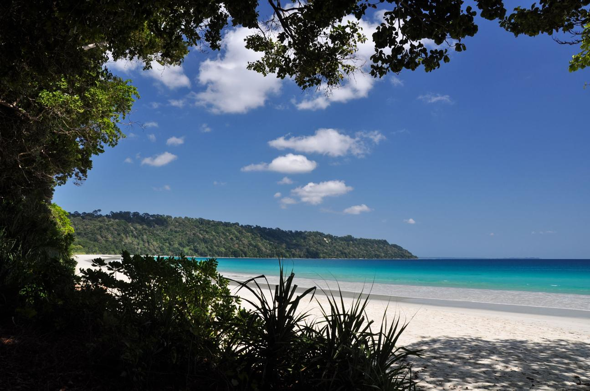

Havelock
Escape into the breathtaking tropical paradise of Havelock Island, one of the most stunning destinations in the Andaman & Nicobar Islands known for its crystal-clear waters, white sandy beaches, and vibrant coral reefs. Surrounded by the deep blue waters of the Bay of Bengal, the island offers an atmosphere of complete serenity and natural beauty. The world-famous Radhanagar Beach is celebrated for its soft sands, turquoise shoreline, and mesmerizing sunsets that paint the sky in shades of orange and gold. Beneath the surface of the sea lies a colorful underwater world filled with coral gardens and exotic marine life, making Havelock a paradise for scuba diving and snorkeling enthusiasts. Dense tropical forests, swaying palm trees, and peaceful coastal surroundings create a refreshing escape far from the rush of city life. The island’s untouched beauty and tranquil ambiance make it one of India’s most unforgettable beach destinations.